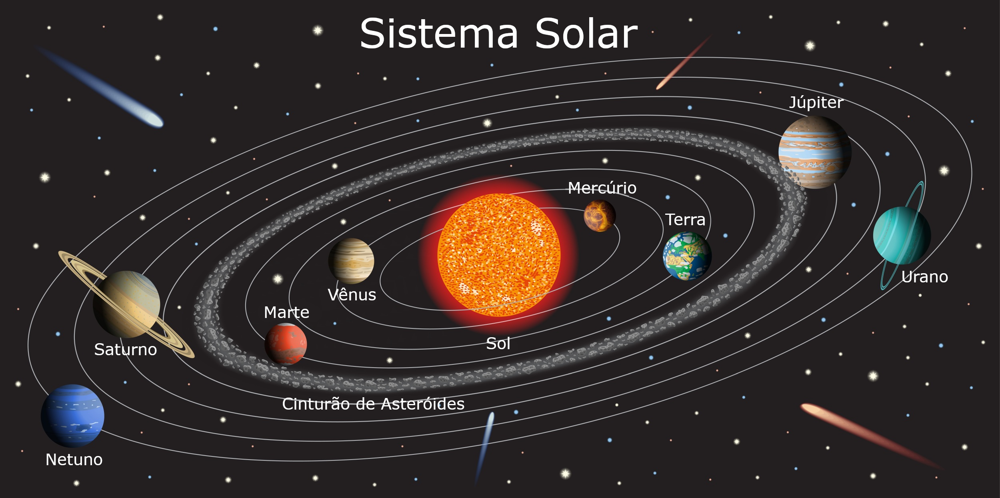

Em nossa galáxia, existe uma grande quantidade de sistemas solares, alguns muito semelhantes e outros muito diferentes do nosso. Além disso, vale lembrar que existem muitas outras galáxias além da Via Láctea onde nos encontramos, todas elas com vários sistemas solares, o que nos leva a concluir que há milhares e milhares de planetas lá fora, alguns possivelmente muito semelhantes à Terra.
Um Sistema Solar é composto por um Sol e todos os planetas e corpos celestes que orbitam ao redor dessa estrela. Há casos de sistemas solares formados por duas estrelas (binários) ou até três estrelas (ternários). Mas no caso do sistema do qual o nosso planeta, a Terra, faz parte, há apenas uma estrela, que é considerada de pequeno porte.

Além do sol, existem no Sistema Solar um total de oito planetas, cinco planetas anões, 179 luas e uma grande quantidade de corpos celestes, como asteroides, cometas e outros, incluindo aqueles presentes no Cinturão de Kuiper. A idade estimada para a formação desse Cinturão de Kuiper é de pouco mais que 4,6 bilhões de anos.
Os oito planetas do Sistema Solar, em ordem de proximidade ao sol, são: Mercúrio, Vênus, Terra, Marte, Júpiter, Saturno, Urano e Netuno. Os planetas anões são: Ceres, Plutão, Haumea, Makemake e Éris, com a possibilidade de inclusão do objeto celeste Sedna e dezenas de outros nessa categoria nos próximos anos. Vale lembrar que Plutão já foi considerado como um planeta, mas, a partir de 2006, foi “rebaixado” à categoria de planeta anão.